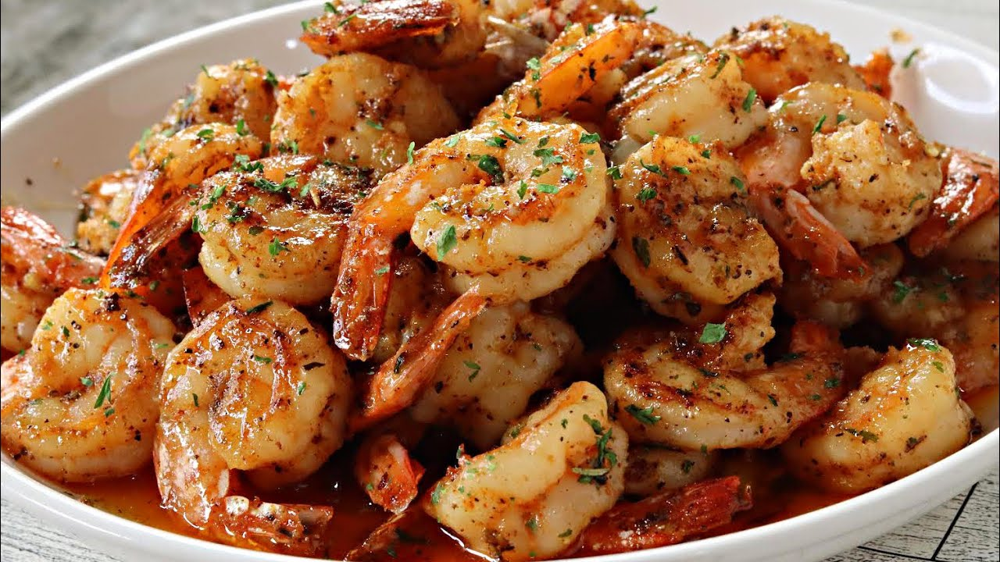

Simple Garlic Shrimp

Simple Garlic Shrimp Description
Plump, juicy shrimp bathed in buttery garlic bliss, kissed with just the right touch of seasoning. Every bite is rich, savory, and irresistibly mouthwatering—pure seafood magic on a plate.
Ingredients
- 1 ½ tablespoons olive oil
- 1 pound shrimp, peeled and deveined
- salt to taste
- 6 cloves garlic, finely minced
- ¼ teaspoon red pepper flakes
- 3 tablespoons lemon juice
- 1 tablespoon caper brine
- 2 tablespoons cold butter, cut into 4 equal pieces, divided
- ⅓ cup chopped flat-leaf parsley, divided
- 1 teaspoon water, or as needed
Cooking Steps
- Cook shrimp – Heat the olive oil in a large pan over medium heat. Add the shrimp and season with salt. Cook for about 2-3 minutes on each side, until they’re pink and cooked through. Remove shrimp and set aside.
- Sauté garlic – In the same pan, add the minced garlic and red pepper flakes. Cook for about 1 minute until fragrant.
- Add liquids – Stir in lemon juice and caper brine. Bring to a gentle simmer.
- Finish sauce – Add 1 tablespoon of butter and let it melt, stirring to combine. Add a teaspoon of water if needed to adjust the sauce consistency.
- Combine shrimp – Return the shrimp to the pan. Toss in the remaining butter and half the chopped parsley. Stir until everything is coated and the butter melts.
- Garnish and serve – Sprinkle with the remaining parsley and enjoy!
Home